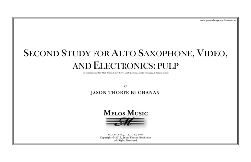

VIEW SCORE:
ABOUT THE WORK:
-
Year Composed:
2015 -
Instrumentation:
alto saxophone, video, and electronics -
Share:
PROGRAM NOTES:
Second Study for Alto Saxophone, Electronics, and Video: pulp (2015) was premiered at the World Saxophone Congress in Strasbourg, France in July 2015 by Matt Evans, and is based on the life and work of American poet Charles Bukowski. The work utilizes source materials - audio and video footage - recorded throughout Bukowski’s life, such as interviews, documentaries, and poetry readings. The work gradually developed from an initial proposal for a work with voice, saxophone, and electronics, to instead include the soprano within the boundaries of the multimedia. The result is a collage made up of the superimposition of source materials…
Performances of Second Study for Alto Saxophone, Video, and Electronics: pulp

April 26, 2017
University of Richmond, North Court
Perkinson Recital Hall
28 Westhampton Way
Richmond, VA 23173
University of Richmond, North Court
Perkinson Recital Hall
28 Westhampton Way
Richmond, VA 23173

March 06, 2017
San Francisco Center for New MusicSan Francisco, CA
San Francisco Center for New MusicSan Francisco, CA
March 05, 2017
Hot Air FestivalSan Francisco Conservatory
San Francisco, CA
Hot Air FestivalSan Francisco Conservatory
San Francisco, CA
September 25, 2016
Vanguard New Music Guest Artist Series, Kent State University
Kent State University, Center for the Performing Arts
Ludwig Recital Hall
1325 Theatre Dr
Kent, OH 44243
Vanguard New Music Guest Artist Series, Kent State University
Kent State University, Center for the Performing Arts
Ludwig Recital Hall
1325 Theatre Dr
Kent, OH 44243

May 14, 2016
Portland State University
Portland State UniversityPortland, OR
Portland State University
Portland State UniversityPortland, OR

April 29, 2016
University of RichmondRichmond, VA
University of RichmondRichmond, VA
April 24, 2016
University of North Carolina at GreensboroGreensboro, NC
University of North Carolina at GreensboroGreensboro, NC
April 11, 2016
Michigan State UniversityEast Lansing, MI
Michigan State UniversityEast Lansing, MI

July 13, 2015
World Saxophone Congress
Strasbourg, France
World Saxophone Congress
Strasbourg, France